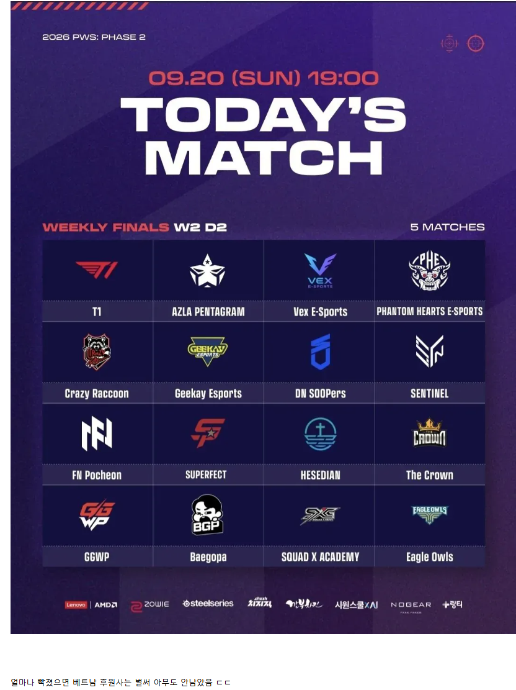
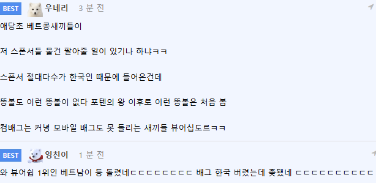

깐부 노기어도 빠진다며?
베트남에 기업이 있어? 동네 가게 협찬아님?
벳남 애들은 삼성 즈그들 회사라던데 ㅋㅋ
빈 어쩌고하는 개똥차 만드는 회사는 하나 있긴함
차? 삼발이 아님?
어허 툭툭이
애초에 저기 베트남 협찬사가 없었던 걸 비꼬는 거임 ㅋㅋ
알아
베트남애들은 좀 딸려서 그런지 오리온도 즈그나라 과자라함
봊팔이 기업 있는거아님?
"왜 한국은 베트남의 발전을 두려워 합니까?"
ㄴ 발전이란 단어도 있습니까?
발전이 아니라 발전기부터 각 세대마다 공급해야 되는 수준 아닌가, 뭐 댓글에서 정전얘기하길래 뭔가 싶어서 찾아보니까 대규모 정전이 여름철에 생각보다 자주 난다던데
베트남기업에서 저기 후원도했었어?? 그럴만한 기업이있나...? 미스사이공인가??
애초에 개미알밥단 스폰서 없었음 ㅋㅋ
비꼴려서 올린글이지
ㅇㅎ 진짜 있었단느줄~ ㅋㅋㅋㅋㅋㅋㅋ
개미알밥단 ㅋㅋㅋㅋ
포텐의 왕이 뭔가 검색했드만 백종원이네??
베트남 진짜 돈 없어서 비행기도 못 타본 상그지 새끼들 ㅋㅋㅋㅋㅋㅋㅋ
국제적 거지새끼들ㅋㅋㅋㅋ
한국은 벳남의 발전이 두려우십니까.?
유튜브 같은거도 동남아 천만뷰 보다 한국 10만뷰가 더 돈 많이줌
??? "비엣남의 빈그룹은 한국에 대한 투자를 철회할 것입니다."
벳남이 못하는것
1 발전(發展)
2 발전(發電)
크흑 전기가 모잘라서 게임을 못하니 방플을 할 수 밖에 없었던 거였구나 그런 딱한 사정도 모르고 참;;
방송 볼 휴대폰(2년치 임금) 충전하려면 방송 이틀전부터 쳇바퀴뛰어야됨;;;
베그 수익국가보니
중국이압도적이고 미국 일본 한국순으로 베트남은 보이지도 않더만 왜 베트남편을 드는건지 모르겠던데
저새끼들이 왜 빡쳤는지 모르겠음ㅋㅋ 사이비같다
기업도 있나요?
베트콩 유사원숭이들이 화내봣자 우끼끼 거러는거 말고 할게 더 있노..
펍지는 왜 현질도 안하고 스폰서도 없는 병신국가 편든거냐ㅋㅋㅋㅋ
과일판매하는 나라가 뭔 현질을 하곘냐
응우옌 헌터 도와줘~~~¡
이러다가 보복으로 바나나 쌀국수 개미알밥 수출 막아버리면 어떻게하려고그럼?
개발도상국 중진국 이제 올라가야하는 나라들이 아프리카나 아시아 쪽에 꽤있는데 이런 나라들 정치환경상 외부 때리기 할때 제일 좋은 나라가 한국이긴함 빠르게 성장해서 선진국 문턱 넘어서서 자기 이하 나라에 여행이나 사업으로 돈뿌리거든 이전에는 체급 좋은 일본이 있긴한데 일본은 요새는 밖에 대놓고 여행이마 사업으로 뭘 뿌리고 다니질 않음
그러다보니 그쪽 나라 정치인이 외부타겟하기 좋게 프레임 잡혀서 반한이 많이 늘었지
이제 깐부랑 노기어도 빼야되는 거지?
스폰서 걷었으면 기어야지 베트남 무료눈깔 챙긴다고 나대냐 에휴 ㅋㅋ
베트남 불매력 오진다 ㄷㄷㄷㄷㄷ
땅굴업체가 후원하면 되겠네. 아니면 김정은이나
ㄹㅇ ㅈ댓네 빼앳남 기업들 벌써 스폰 다뺏네 한국 기업들이 젤느리네~~